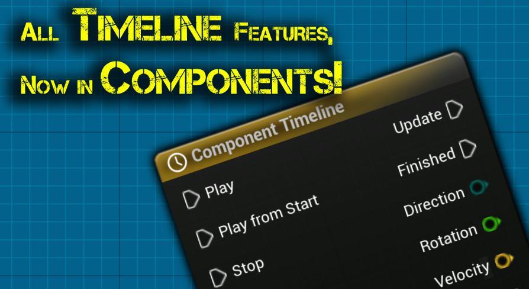

To enable the plugin, do these steps:

Right-click in a component blueprint, then type Add Component Timeline.

For your timelines to work correctly, you must initialize them when your component starts to operate. If you do not initialize them, the timelines do not work as intended. To initialize your component timelines, call "Initialize Component Timelines" during Begin Play.

Component timeline node

Component Timeline nodes are special nodes in Blueprints. They let you quickly design time-based animation and play it. The animation is based on events, floats, vectors or colors that can be triggered at keyframes along the timeline.
You can edit a Timeline directly in the Blueprint editor. To do this, Double-click it in the Graph tab or in the My Blueprint tab. Timelines are specially made for simple tasks that are not cinematic. For example, they can open doors, change lights or make other time-based changes to Actors in a scene. They are similar to level sequences, because both interpolate values between keyframes along the timeline, for example floats, vectors and colors.
Timelines have these input and output pins:
Input Pins
| Item | Description |
|---|---|
| Play | Plays the Timeline forward from its current time. |
| Play from Start | Plays the Timeline forward from the start. |
| Stop | Stops the playback of the Timeline at the current time. |
| Reverse | Plays the Timeline backwards from its current time. |
| Reverse from End | Plays the Timeline backwards from the end. |
| Set New Time | Sets the current time to the value of the New Time input. |
| New Time | This data pin takes a float value, which is a time in seconds. When the Set New Time input is called, the Timeline can jump to this time. |
Output Pins
| Item | Description |
|---|---|
| Update | Sends an execution signal as soon as the Timeline is called. |
| Finished | Sends an execution signal when the playback ends. The Stop input does not trigger this signal. |
| Direction | Gives enum data that shows the direction in which the Timeline plays. |
Timelines can have any number of additional output data pins. These pins show the types of the tracks that you make in the Timeline. The track types include Float, Vector and Event tracks.
This is an experimental feature. I added it because a user asked for it. I did as much as possible to make it work well, but I cannot know all the use cases in advance. Do not use it if you do not understand all of its limitations.
The TimelineComponent does the work of a timeline. Thus, to use a timeline, you need an actor. The plugin makes the component for this actor.
Use an actor whose lifespan is related to the lifespan of the blueprint that contains the timeline. For example, you can link the timelines in on-screen widgets to the HUD, which is an actor.
It is also not good practice to use the PlayerPawn as the solution for all cases. In most cases this works, but it adds a lot of clutter to the PlayerPawn.
This feature is disabled by default. To enable it, select the "Enable timelines in all blueprints" check box in Project settings, under Plugins -> Component Timeline.

The option has an effect only after the editor restarts. Thus, restart the editor before you look for the node.
To use timelines in a blueprint, do these steps: